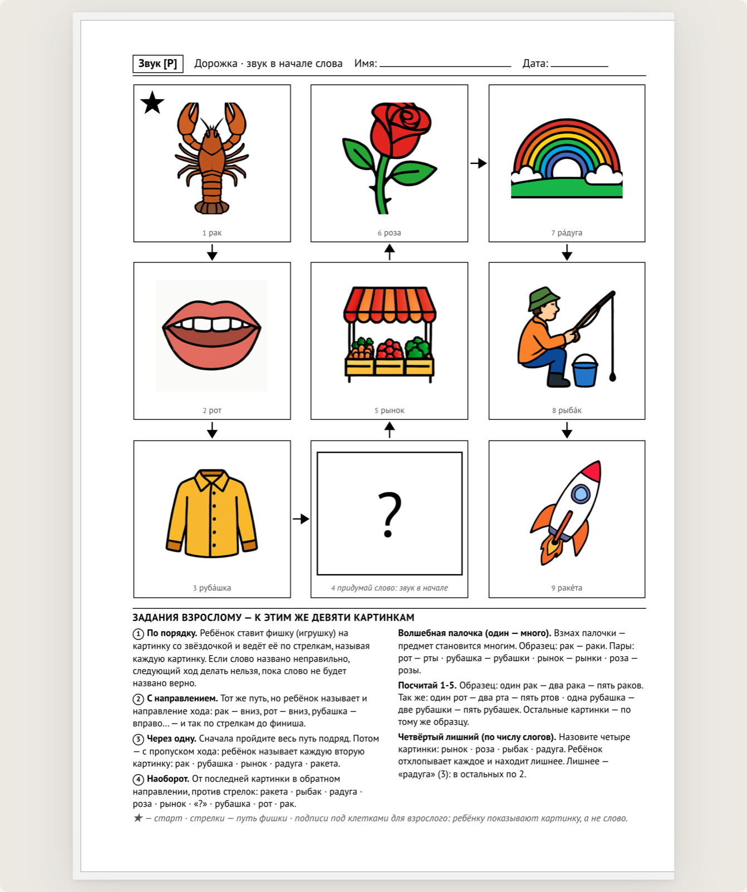
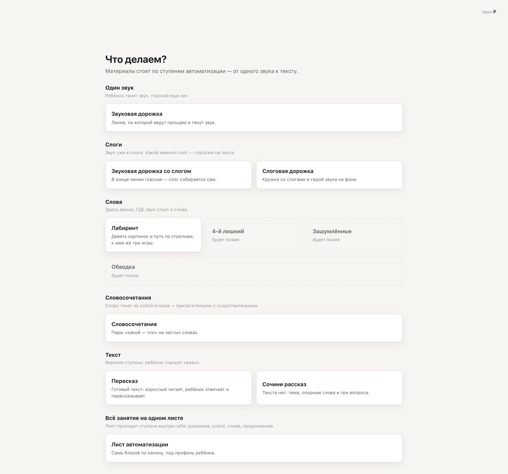
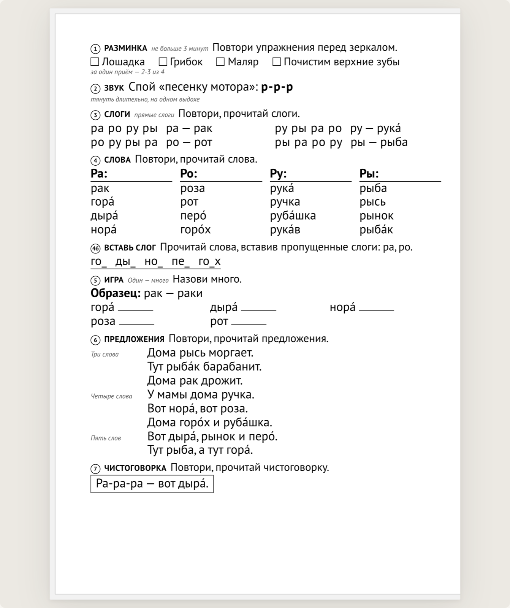
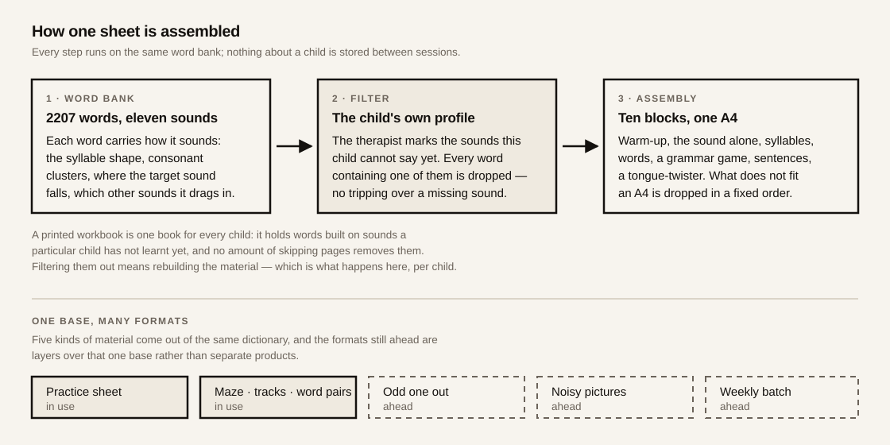
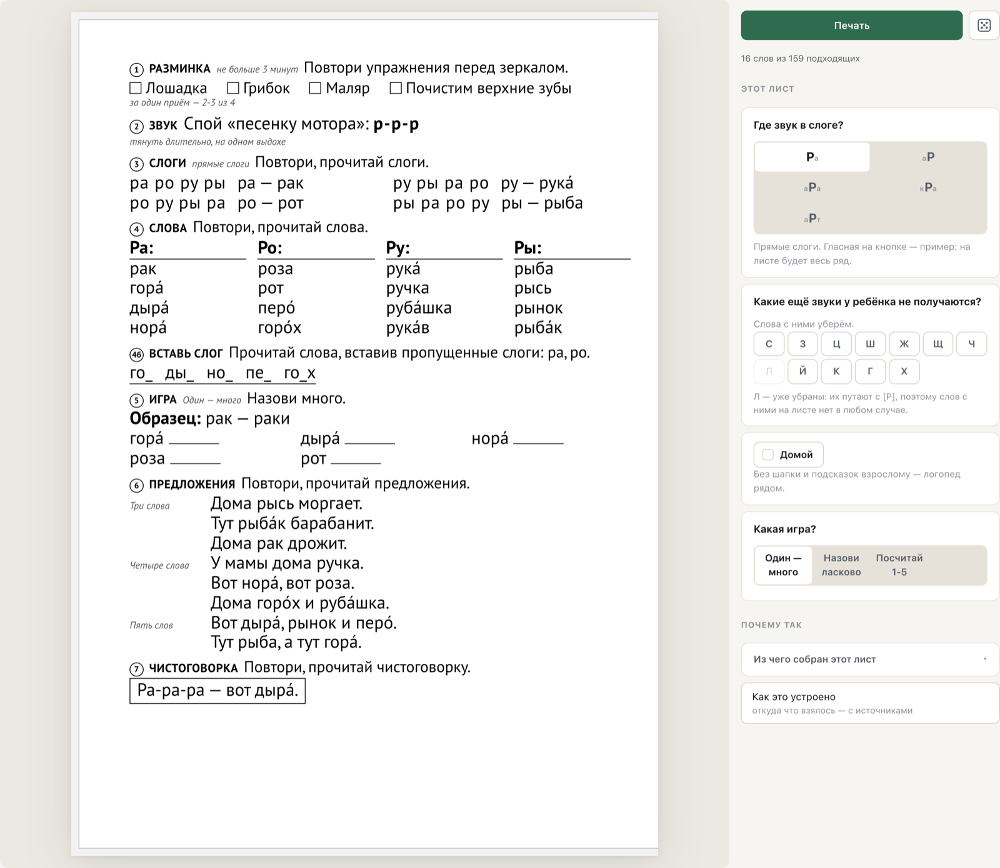
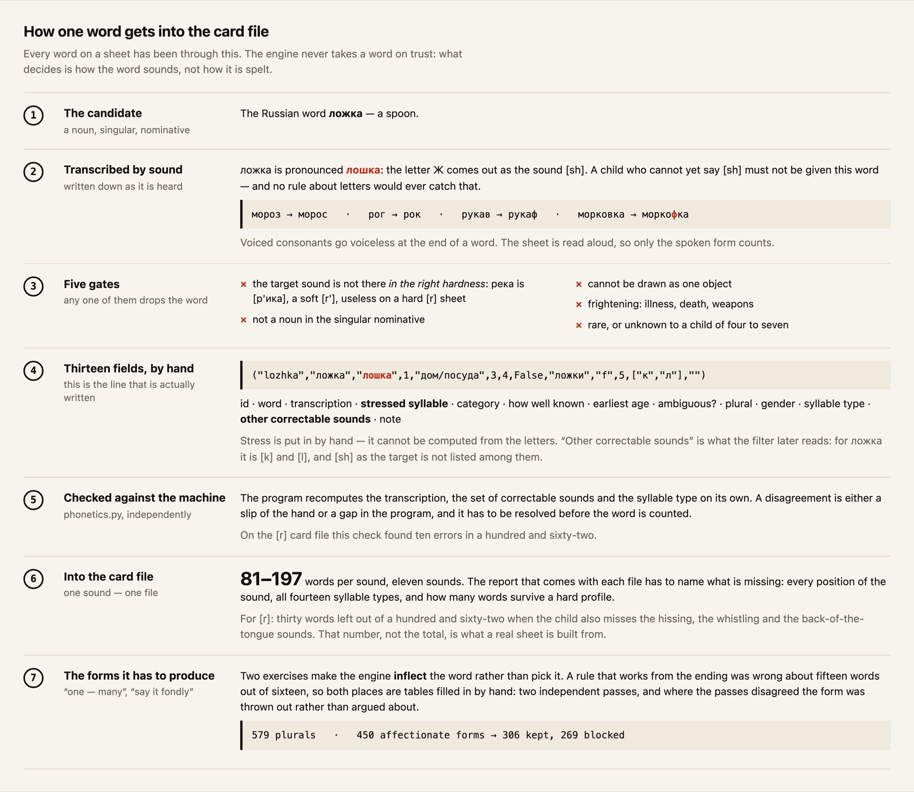
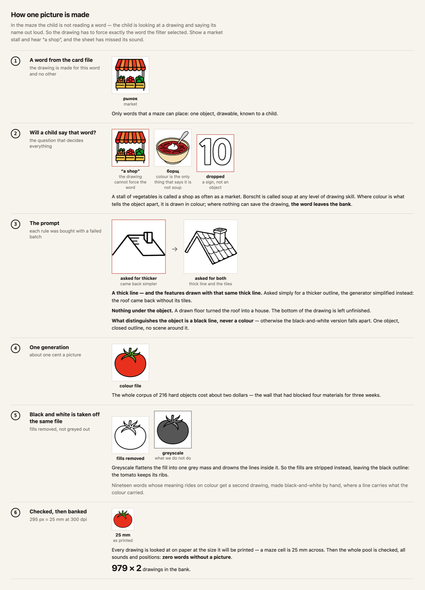
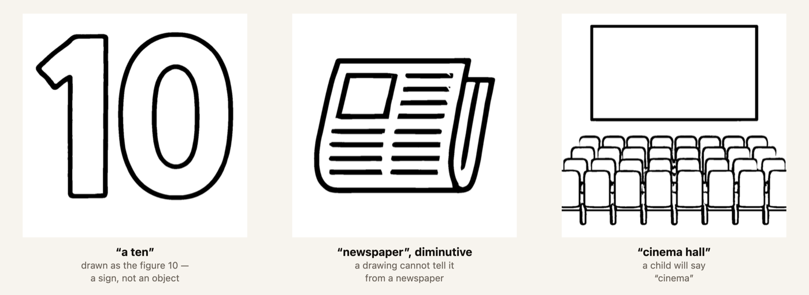
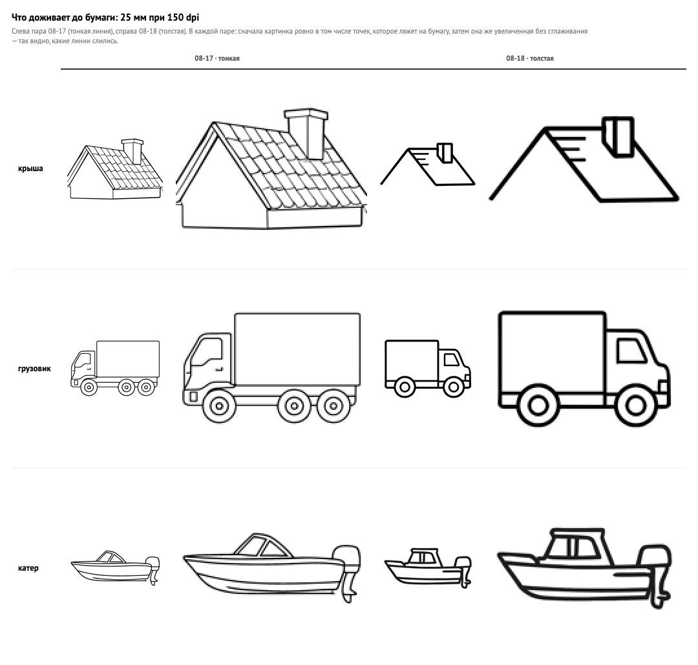

Printable material for sound practice, made for one child. Every word is filtered against the sounds that child cannot say yet.

A speech therapist puts an hour a day into making materials — it stands in the working timetable as a line of its own. Ready-made paper albums exist in plenty, and every one of them has the same limit: a printed page cannot know which other sounds this child gets wrong. A child practising [r] who cannot say [sh] must not be handed the word “shirt”. That single filter is the whole difference here; everything below follows from it.



You choose the sound being practised and tick the sounds this child cannot say yet. Everything after that is automatic. The dictionary is cut down to words that hold the target sound and none of the forbidden ones, and seven blocks are assembled onto one page: warm-up, the sound alone, syllables, words, a grammar game, sentences, a tongue-twister. The same bank feeds every other material on the ladder.
Every word is transcribed by sound, not by spelling, because a Russian word can be written with one consonant and spoken with another. If a word cannot be verified, the build stops.

The filter can only work if the engine knows how a word sounds — and Russian spelling does not tell it. That knowledge is written in by hand, word by word, and then checked against the program that computes the same thing on its own.

| the word | what the rule produced | what goes on the sheet |
|---|---|---|
| стул chair | пять стулов | пять стульев |
| угол corner | два угола | два угла |
| лоб forehead | пять лобов | пять лбов |
Five hundred and seventy-nine words were then inflected by hand, twice and independently. Only forms both passes agreed on were kept.
| the word | the “small” form | what it actually means | printed |
|---|---|---|---|
| ворона crow | воронка | a funnel | no |
| корона crown | коронка | a dental crown | no |
| пила saw | пилочка | a nail file | no |
Four hundred and fifty words went through the same double pass; they agreed on ninety-five per cent. Every disagreement was thrown away, not resolved. Three hundred and six forms survived; two hundred and sixty-nine were blocked.
In the maze the child is not reading a word — the child looks at a drawing and says its name out loud. Show a market stall and hear “a shop”, and the sheet has missed its sound. That is why the drawings are our own: 979 objects, each made for the word it has to force.

The author went through the bank drawing by drawing and three words left it. None of the three is a bad drawing; all three fail the same way — what the child sees does not force the word we filtered for. When a drawing cannot name its word, it is the word that leaves, not the drawing that gets redrawn twice.

A picture on the maze is 25 mm across. At that size a thin line closes up and the object stops being readable. But the request “make the outline thicker” came back as “make it simpler”: the roof lost its tiles, the doctor lost his cap. The working wording asks for both at once — a thick line and the features drawn with that same thick line. On eight hard objects the thick line won on six.

Every word the maze can put on paper now has a drawing of its own. The check runs across the whole pool, for all sounds and positions, and returns zero words without a picture. Black and white is taken off the colour file by removing the fills, not by desaturating — which also decided what the prompt must ask for: every distinguishing feature drawn as a black line, never assigned to a colour.
Four materials had been blocked for three weeks by one thing: nobody had drawn the objects. The plan was to draw them by hand and buy only the animals. A trial on eight hard objects settled it — the generator won on seven, including the things: a truck with its cab apart from the box, a boat that is not a ship, a doctor who is not a boy. That put the price of the whole corpus at about two dollars.
Four styles were compared against the research literature rather than by taste. Pictograms lost on a number: in one study of 1525 of them, 47 per cent of adult answers differed from the intended caption — and children do worse than adults. My own guess that “a plain even drawing distracts less” was not supported at all; what is supported is simplicity of content, which is a different slider. The ceiling is set by which words and views are chosen, not by the manner of drawing.
Both were listed as working features. Neither could be built for almost any sheet: the rule they stood on had been switched off two days earlier, and the table replacing it covered twenty-three words out of seventeen hundred. They were counted as existing without existing.
The single line that tells a file to execute its tests was sitting in the middle of that file instead of at the end. Everything below it was silently skipped: ten test functions, five written by other people. The suite still printed a clean result. Moving one line took the count from 1224 checks to 1649.
Word pairs were built as another block of the sheet. Then the sheet was measured: an A4 page holds 273 millimetres of material, and the existing blocks already asked for 305 to 363. The block became a separate printable material instead, and the sheet did not change by a millimetre.
A practice track for one voiced consonant printed syllables that come out as its voiceless twin when read aloud. The sheet was training the opposite sound. Two more materials had the same class of fault. All three came off the paper the day it was measured. What a letter looks like and what a mouth does with it are different facts, and only the second is allowed to decide anything.
The sheet printed a line about sounds that were “still difficult” for this child. Nothing in the input says that: the therapist ticks which sounds to avoid, which is not the same as a diagnosis. The line came off. A generated document may state what it did, never what it inferred about a person.
Navigation rested on the idea that one session equals one step of difficulty. Ten real lesson plans were coded into a dataset of thirty-three task names, and not one worked that way. A therapist works from how far this child has come with this sound, and builds a run-up to it. The idea was dropped; the engine, tested against the same dataset, held.
A speech therapist described the format she needed. What went into the code was my summary of her words, not the words. A week later the two were compared: the format in the code was not hers. Her words now live untouched in their own file, and any reading of them sits beside them, never on top.